So, we are seeking the coefficients
A1, A2, A3 for the AB3 method
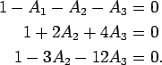
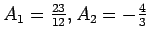
, and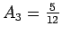
.
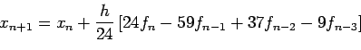
Just set h=1, plug in a quartic and solve the resulting linear system.
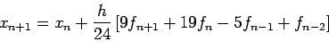
Just set h=1, plug in a quartic and solve the resulting linear system.
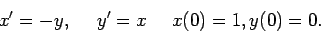
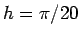
and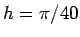
using forward Euler, backward Euler, 3rd order Adams-Bashforth, 3rd order Adams-Bashforth-Moulton. Use an appropriate Taylor series start-up procedure.
I implemented all four methods and plot the results below.
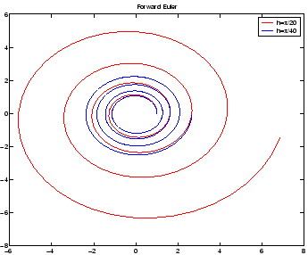
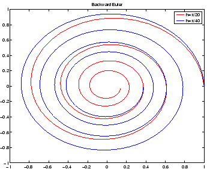
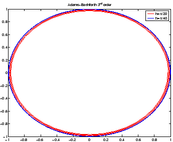
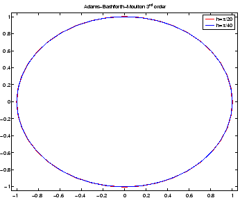
Of course, the Euler methods are not as accurate as the Adams family
methods. More interesting is the qualitative behavior of these
methods. All methods orbit roughly four times.
Notice that the forward method spirals out which is
precisely what one would expect from the stability test via the scalar
test equation. Remember that the imaginary axis for the forward Euler
equation is entirely in the unstable region. The opposite is true for
the backward Euler method. The imaginary axis is entirely within the
stable region. Ideally, a numerical method would ``hug'' the
imaginary axis in the  plane so reproduce oscillator
behavior with as little decay or growth as possible.
plane so reproduce oscillator
behavior with as little decay or growth as possible.
Looking at the lower two plots, we see that the Adam's family methods are much more accurate for the given step-size, and they have been stability properties. Remember in class how the AB4 hugged the imaginary axis for small h? This is important! Both AB3 and ABM3 have the same order of accuracy, but if you examine the stability diagrams ABM3 does a far better job of hugging the imaginary axis than AB3. Below, I zoom in on the starting and ending positions of ABM3. Where AB3 spirals inward slightly, ABM3 spirals outward slightly (why?).
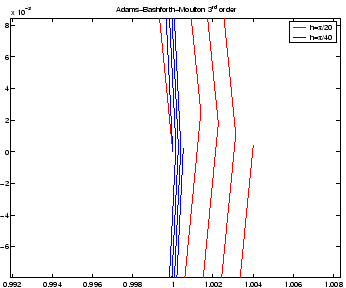